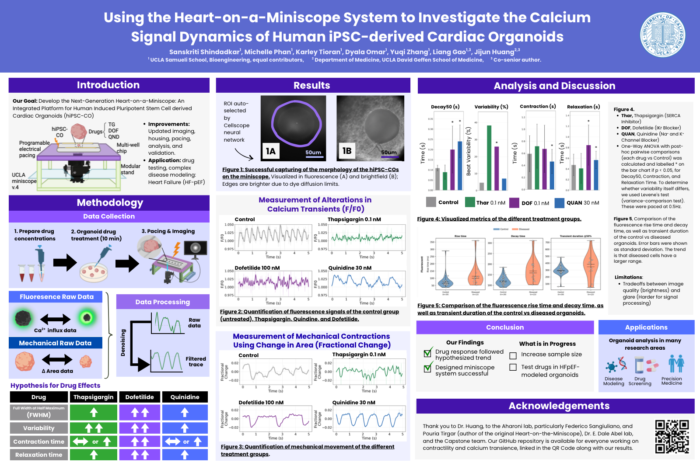

High-Throughput Imaging of Cardiac Organoids with the Miniscope
Sanskriti Shindadkar · Capstone / research at UCLA
The Challenge with Drug Testing
If you just try to test drugs on cell models in vitro, they really won't tell you about the effect the drugs will have on human organs. Over 90% of therapies fail human clinical trials1 in part because animal and mathematical models do not fully capture how drugs interact with the human body. The multicellular industry standard, the dog Purkinje fiber assay, has been reported to show only a 33% correlation with human physiology
One promising alternative is organoids (which you can grow from an individual's stem cells, too!). Cardiac organoids are especially intriguing, as there's a lot of drug recalls due to unpredicted cardiotoxicity.
However, there's no cheap+convenient+high throughput option to get images for them; for a traditional microscope, you need to move the slides in order to get images of different cells that are not in the field of view.
The Miniscope Solution
The miniscope is a compact mobile mini-microscope that you can move in order to get high-throughput imaging data without sacrificing too much on resolution - and they're quite cheap!
My Work
I've been working on optimizing the data extraction and analysis pipeline for fluorescent data recordings from the miniscope. For instance, an automated pipeline that processes the files to extract calcium transience plots and calculate different key parameters from those.
Poster: Heart-on-a-Miniscope
Capstone poster on using the heart-on-a-miniscope system to investigate calcium signal dynamics of human iPSC-derived cardiac organoids (hiPSC-COs), including drug-response measurements for calcium transients and mechanical contractions.

Sanskriti Shindadkar, Michelle Phan, Karley Tioran, Dyala Omar, Yuqi Zhang, Liang Gao, Jijun Huang
Download PDF